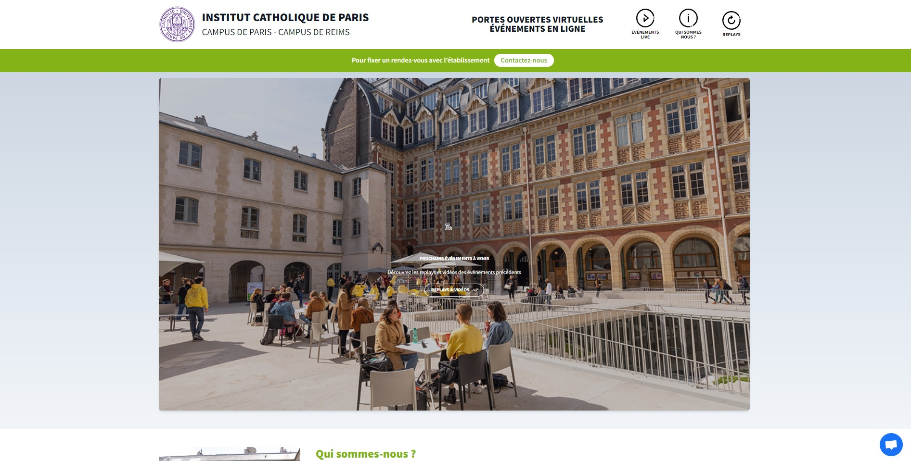

Description
Mon rôle au sein de l’ICP était de travailler sur la pertinence du site, de faire en sorte qu’il soit agréable à parcourir, de travailler l’UX et de soigner l’image que donne l’ICP à travers le site. En utilisant les compétences que j’ai appris au cours des précédentes années, j’ajoute au site mes expériences, afin de le rendre plus ergonomique.
Mes missions à l'ICP étaient variées :
- intégration et valorisation de contenus web,
- mise en œuvre ainsi que de la diffusion des bonnes pratiques SEO au sein d’une communauté de contributeurs,
- création de bannières Web, newsletter,
- emailing,
- participation à l’urbanisation web de l’ICP (assistant gestion de projet web, création, déploiement de site) ainsi que du suivi statistique des données.
Projets réalisés
Page web formations
Un projet très important pour l'ICP était la refonte des page de formation car leur design était ancien. Nous avons donc travaillé en méthode agile afin d'être toujours a jour avec les autres participants du projet. La fonction "recherche" a aussi été refaite.


Newsletters
Les newsletters étaient très communes à l'ICP. Envoyées au personnel, aux professeurs ou aux étudiants, leurs buts étaient divers et variés : présenter une formation, inviter à des portes ouvertes, faire découvrir le nouveau campus de Reims, célébrer des fêtes...

Landing Page ICP.live
L'ICP devait faire ses portes ouvertes durant la pandémie COVID. Ne pouvant pas le faire sur place, les portes ouvertes on eu lieu en ligne, une landing page a été créée afin de diriger les intéressés vers des présentations de formations, des lieux...
Animation
L'un de mes premiers projets à l'ICP était la création d'une animation pour souhaiter une bonne année. Cette animation était ensuite insérée sur le site et dans des newsletters à l'attention des étudiants et des recteurs d'autres établissements liés à l'ICP.